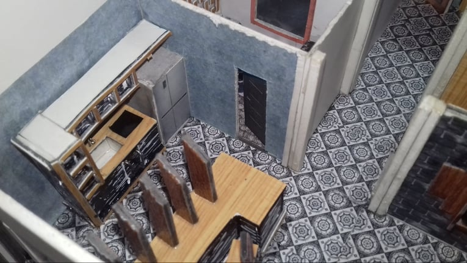
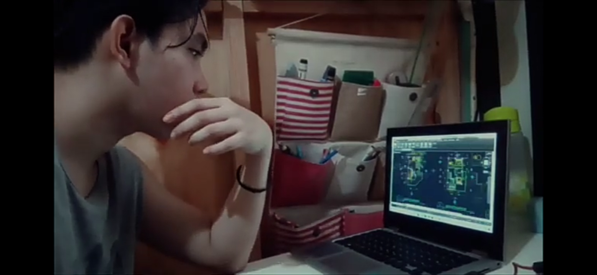
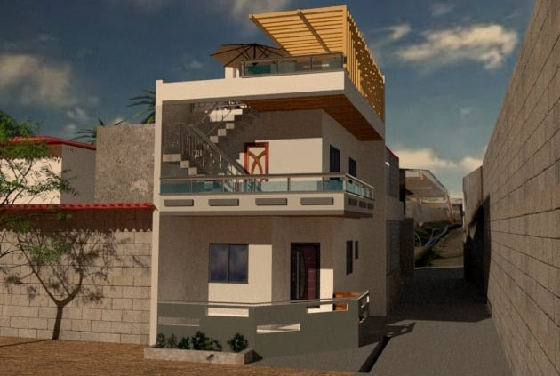
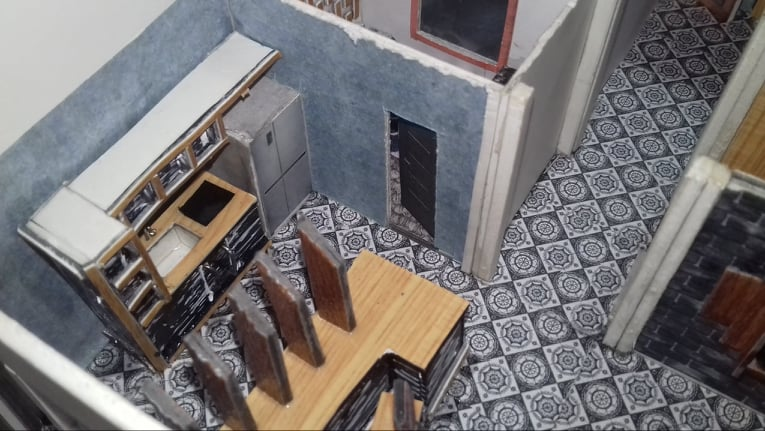
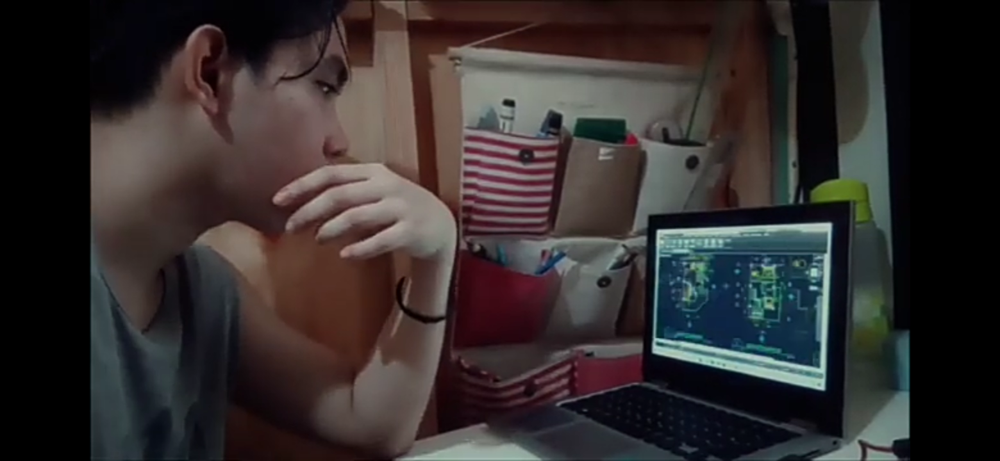
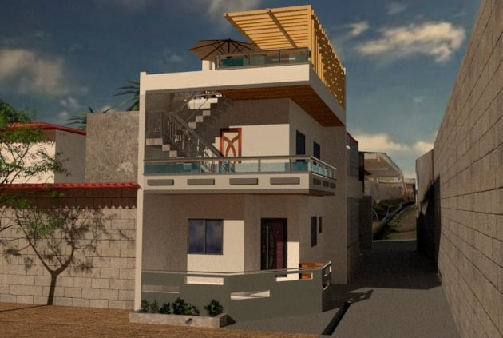

My plan is to finish my studies and then pursue my interest in architectural design in order to
improve my skills. I believe that if I choose what my preference or interest is, my career will be more
successful.
I will apply what I have learned outside of school to benefit the company or organization for
which I will work by being a good individual as well as a dependable and successful member
of the professional team.
This is the time we had a scale
model and it was the first time
we did this project so when we
finished it I was proud of myself
because I did such a good project.
These are my commissions. I was studying Sketchup
and Vray Software to use them in the future.
Then I started planning for my house. When we had
Immersion, I had the opportunity to do this,
and as a result, I finished the plan for my future house.